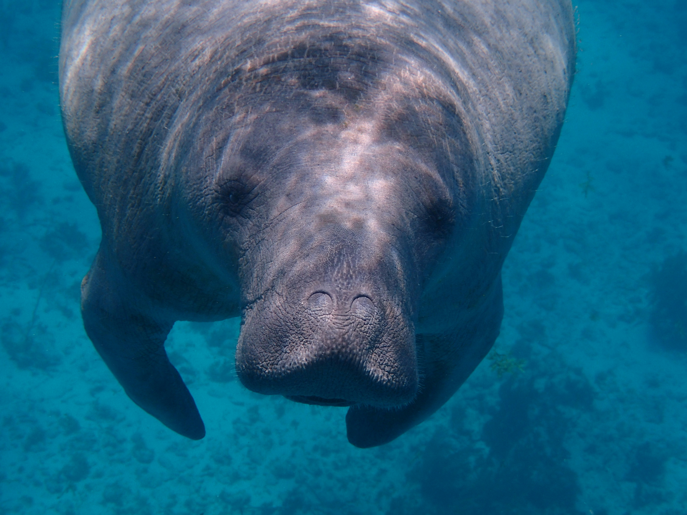

About Me
My name is Daniel and I go by Dan. I was born in Colorado. I currently live in Utah with my Wife and Daughter. I am currently working as an Integration Specialist for a FinTech Company. My family is my world and I love spending time with them. I love to travel and I love to learn new things.
Manatees are cool
Manatees, often referred to as "sea cows," are large, gentle marine mammals found in warm coastal waters. They have a distinct, rounded body with a broad, flat tail that helps them glide gracefully through the water. These herbivores primarily feed on seagrasses and other aquatic plants, spending much of their day foraging. Despite their large size, manatees are slow-moving creatures, typically traveling at speeds of around 5 miles per hour. Unfortunately, manatees face threats from habitat loss, boat collisions, and pollution, making conservation efforts crucial for their survival.
